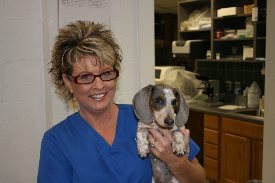
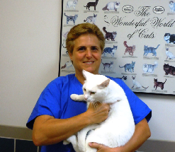

St. Francis Hospital Staff
- 
Ashley Mauldin has been with St.Francis Hospital for Animals since the beginning and was invaluable in getting the practice off the ground. She is our head technician and does everything from reception to assisting in surgery. She and her husband Don have one son, two dogs and a cat

-
Dr. william Cooper is the owner and founder of St. Francis Hospital for Aniamls. He grew up in Charlotte in the Freedom Park neighborhood and did his undergraduate studies at N.C. State University. He received his Docto fo Veterinary Medicine degree from Auburn University in 1984. After working for a brief period with a large animal practice in Florida, Dr. Cooper interned at one of the busiest practices in Chicago before returning to Charlotte. Dr. Cooper has been an animal lover since childhood. When not working, Dr. Cooper enjoys playing Frisbee with his dogs or flying small planes. He and his wife Carol have six cats, two dogs, and two horses.
Annette Celender, LVT is our office manager. She is a graduate of the Median School of Allied Health, Veterinary Teachnology program in Pittsburg. She has been with St. Francis since 1999 and in the veterinary field for over 29 years. She has several cats and is shown above with, Phantom, one of her handicapped kittens. She has a special interest in feline medicine and hand-raising orphan kittens. “All my cats have been ‘un-adoptable,’ requiring medical attention which I have been very fortunate to provide for them.”